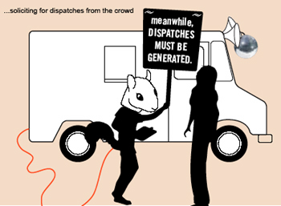

|
Karaoke Ice is a commissioned residency project by ZeroOne San Jose, San Jose State University, and the The Sally and Don Lucas Artists Programs at the Montalvo Arts Center.  Karaoke Ice is a delicious pop culture mash-up, an ice cream truck-turned-mobilekaraoke-unit, deployed to unite people in a collective quest to transform the streets of San Jose into a space of community interaction. Participants karaoke for an audience while sitting in the transformed front cab of the vehicle, and use a customized karaoke engine to select, sing, and record a song for later broadcast, as the truck makes it way to a variety of festival locations. Free frozen treats lure prospective performers to participate, distributed by Remedios the Squirrel Cub, who drives the truck and choreographs enigmatic rituals of his own to the tunes emanating from the citizen performers. Lucy in the Sky with Diamonds. Superstition. Heart of Glass. The streets of San Jose transformed through flavor and song.
Overview  Imagine an ice cream truck transformed into a mobile karaoke unit, driven by a squirrel cub with a penchant for cheap magic, deployed to spark spontaneous interaction between festival-goers, locals, and tourists in Cesar Chavez Plaza and surrounding neighborhoods. Customized with karaoke mics, disco ball, and speakers, and aesthetically "dressed" in a language of local vernacular (think lowrider neon, mariachi fringe, Chinese lanterns, and California cool), this "mobile magnet" not only serves as an information node within the festival network, but represents a "metanomad" who wanders the festival grounds, seeking and sharing information, catalyzing play among the Cesar Chavez populous, and delivering cool treats amidst the rays of the bright August sun. Imagine an ice cream truck transformed into a mobile karaoke unit, driven by a squirrel cub with a penchant for cheap magic, deployed to spark spontaneous interaction between festival-goers, locals, and tourists in Cesar Chavez Plaza and surrounding neighborhoods. Customized with karaoke mics, disco ball, and speakers, and aesthetically "dressed" in a language of local vernacular (think lowrider neon, mariachi fringe, Chinese lanterns, and California cool), this "mobile magnet" not only serves as an information node within the festival network, but represents a "metanomad" who wanders the festival grounds, seeking and sharing information, catalyzing play among the Cesar Chavez populous, and delivering cool treats amidst the rays of the bright August sun. The truck, or Lucci as she is known, is a tasty pop culture hybrid, one that brings two familiar expressions of "network culture" - ice cream trucks and karaoke bars--into conversation with one another. Dressed in song and shimmer, Lucci broadcasts tinny pop songs in endless, repetitive loops as she weaves her way through the zone of the Festival. This then, is her magic. The resulting mix is one that celebrates the power of song to entice and inflame, as well as the sense of community that can be fostered among strangers trapped in a terrestrial network.  Tinged with the themes of deception and illusion, of costume, character, water, and ice, Lucci and her pal Remedios draw participants in through sight, sound, and taste. Unable to resist the temptation to editorialize the festival goings on, she doles out festival news, providing her own sharp brand of observation and opinion on things seen and (over) heard. Patrons can read these printed missives as they are dispatched daily through a slit in Lucci's side. At nighttime, once their work for the day is done, it's time to let loose. They find a party to join, hustle some more karaoke, and enjoy the festival entertainment. Karaoke Ice was designed and produced in collaboration with students and graduates of the San Jose State Cadre Laboratory for New Media. Cadre Laboratory Team:
Joel Slayton, Executive Producer
Mike Weisert, Line Producer Web Development Team:
Mike Weisert
Kristin Oâ•˙Friel
Bruce Gardner Software Development Team:
John Bruneau
Corrie Tse
Mike Weisert Build Team:
Thomas Asmuth
Sarah Lowe
Owen Premore URLs |